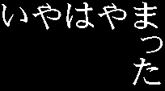

"The IYA! HAYAMATTA" - HAYAMA Kaoru's WWW PAGE
This page is written with Nihongo! (=Japanese ;-)
![[No!GIF]](img/nogif.png)
|

|
△WebChain/2△
《前々〈前
あなたは 回、はやまってしまった
次〉次々》
回、はやまってしまった
次〉次々》
▽らんだむ〜▽
| ★ Software factory ★ |
★ Diary & scripts ★ |
|
|
- やまじぎゃぐ
奴が改心するまで止められない
(8/26) 8個追加
|
本ページはスタイルシートや PNG画像をやたら使用しております。サポートしていないブラウザをご使用の場合、少々、地味になります---が、一応、読むのは支障は無いはずです、多分。(しかし、JavaScript をオフしただけで、スタイルシートが効かなくなるのは何故!?)
mailto:iyamatta.hayama@nifty.ne.jp
(C) 1998-2000 HAYAMA,Kaoru
, since 1998/3/17